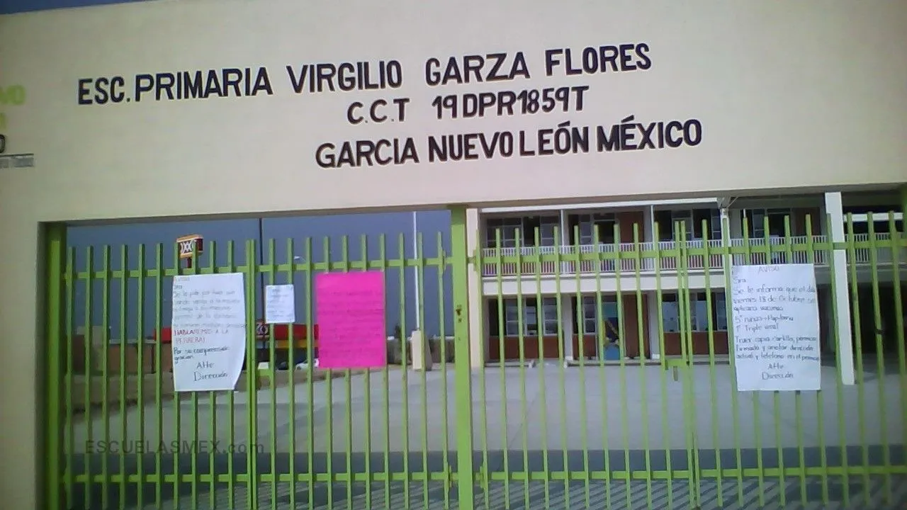

Turno Matutino - García, Nuevo León
Somos una comunidad educativa comprometida con la formación integral de nuestros 900 alumnos. Contamos con aulas equipadas con tecnología y acceso a internet para potenciar el aprendizaje Virgilio Garza Flores Público / Estatal Educacion Basica Primaria Primaria General Prolongación Leones Los Heroes Capellania, García García Nuevo León CP. 66001 Educacion Basica en García CCT (Clave de Centro de Trabajo): 19DPR1859T Zona: Urbano Turno: Matutino Fundada en 2012-08-20 Estado: Activo (2024).
Nuestra escuela se caracteriza por mantener una baja deserción escolar y un equipo docente eficiente y dedicado. Trabajamos día a día para ofrecer un ambiente seguro y estimulante para nuestros estudiantes.
La Escuela Primaria Ing. Virgilio Garza Flores, ubicada en García, Nuevo León, cuenta con una estructura organizativa y física diseñada para apoyar el aprendizaje integral de sus estudiantes.
El equipo directivo está conformado por una directora, subdirectores y personal administrativo, quienes se encargan de coordinar las actividades escolares, gestionar recursos y brindar atención a padres de familia.
La escuela cuenta con maestros asignados a cada grupo de 1° a 6°, así como docentes especializados en Educación Física, Inglés, Computación y Educación Artística. El personal docente se caracteriza por su compromiso y preparación profesional.
Las aulas están equipadas con mobiliario adecuado, pizarrones, materiales didácticos y, en algunos casos, dispositivos tecnológicos para apoyar la enseñanza.
El aula de medios cuenta con computadoras, acceso a internet y recursos digitales. Es un espacio clave para que los alumnos desarrollen habilidades tecnológicas.
Contamos con personal de apoyo psicopedagógico que brinda orientación a alumnos y familias, y atiende situaciones de convivencia y necesidades especiales.
La Asociación de Padres de Familia participa activamente en mejoras de infraestructura, organización de eventos y apoyo a programas escolares.
Dirección: Calle Principal #123, García, Nuevo León
Teléfono: (81) 24729114
Email: EscuelaVirgilio@.edu.mx
Conoce por qué nuestra escuela es la mejor opción para tu formación.
Alumnos matriculados
Maestros especializados
Programas académicos
Tasa de graduación